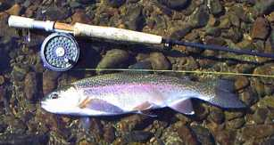
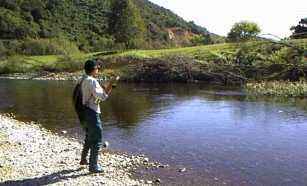
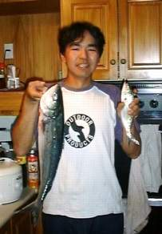
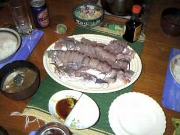

釣行日誌 ＮＺ編
海釣りの愉しみ、食卓の愉しみ
2001/04/08 (SUN)

快晴、無風の好条件の中、Ｎ君と山岳渓流を攻める。ワンちゃんの作業場から入り、100mほどの区間で、40,50,45,42cmのレインボー、ブラウンを釣る。ドライフライにわんさと出た。
二股のカーブの下では、またしても早あわせで外してしまう。その下の藪では、ジャンプした鱒が木の枝を飛び越えて向こう側に着水してしまい、あっけなく当たりフライのアダムスを切られた。

Ｎ君が、大物の53cmブラウンと格闘していたので、あわてて走って助っ人となる。ネットに入りきらない大きさの、丸々太った元気の良いブラウンであった。
その後、パッとしないまま、五時頃作業場に戻り、30cmのレインボーがハッチしている14～16番程度のクリーム色のメイフライをどん欲に食べているのを発見。どんぴしゃで釣る。元気がいい。
風もなく、まさにドライフライのための日曜日であった。
2001/04/14 (SAT)
山岳渓流へ。釣り人らしきテントが張ってあり、疑心暗鬼で釣り始めたが、けっこう魚はいた。しかし、途中から渋くなる。なぜ？
久しぶりにＵＦＭの４～５番パックロッドを使ったので、とても柔らかく感じる。30～35cmの虹鱒を５尾釣る。雨の後なので、とても食い気が立っており、パックリと疑うことなくドライフライをくわえて水中に消えて行く。
久しぶりに長い区間を釣り歩いたので少々疲れた。
2001/04/15 (SUN)
日本人の友人同士４人で、スプリングクリークへ。さすがにイースターホリデーはどこへ行っても釣り人が多い。初めてルアー釣り、というか釣りそのものを初めてするＴさんを案内して上流へ。何度かＴさんのスプーンを鱒がくわえるがヒットまでに至らず。下流の暗がりでようやくＴさんがヒットをものにし、岸辺まで寄せてくるがジャンプに耐えきれず鱒が外れてしまう。落ちた鱒が草むらに載ったのであわてて捕りに行くが、後少しの所で逃す。悔しい。
Ｒ君の釣った鱒をもらったので、なんとかお昼のおかずをキープできた。Ｔさん、Ｎ君、私の三人で、鱒の塩焼き、ザルソバ、冷や奴という純日本食のランチを楽しむ。ビールが旨い。
2001/04/16 (MON)
連休の最後、ラグランで海の小物釣りを楽しむ。
Ｎ君の貸してくれたサビキで、小アジが入れぐいとなる。新鮮なアジを持ち帰り、板前は素人だが、生きのいい刺身を楽しむ。ワサビとさしみ醤油が、五臓六腑に染み渡る。晩ご飯は、焼き魚＋鳥のミンチボールの鍋＋白菜の漬け物という夕飯であった。正しい日本の食卓ですね。
2001/04/21 (SAT)
先週の好釣に味をしめて、再びラグランへ。朝７時半に着いて、９時の満潮を迎えるはずが、なぜか潮はすでに止まり気味。潮位表を読み違えたのか？
散発的にアジらしきアタリがサビキを垂らしたロッドティップを震わせるが、乗りがいまいち。やっと大きいのが掛かったと思えば、安物のサビキのハリが伸びてしまい、唇をかみしめて悔しがる。
そうこうするウチに潮は引き始め、流れの速い桟橋周辺からアタリが遠のく。流れが速すぎてサビキが沈まない。が、ピアの後ろ側に、流れの乱れが出来ていることを発見。そこにサビキを沈めると、これまで釣れていなかったカウワイが続々とアタる。してやったり。
いったん昼食を買いに町中へ行き、にぎわうカフェを見ながらサンドイッチを買い込む。
腹ごしらえをして、再び桟橋に戻ると、沖の方からいや～な灰色の雲屏風が近づいてくる。案の定、激しいにわか雨となり車中に待避。しばし昼寝を楽しむ。
雨上がりを待って、眠い目を擦りつつ、ど干潮の桟橋で再び釣り始める。水深が浅くなったので、底を狙っていてもボラの子供などに餌を取られてやっかいである。しかし、満ち始めた直後から、そこそこのアジがかかりニコニコ。
Ｎ君の投げ竿には 、小鯛、アジ、カウワイ、名を知らぬピンク色の小魚、ホウボウ、ヒトデ、サヨリ、果てはタツノオトシゴまでが掛かり、８種目制覇を達成する。特にホウボウは、30cmぐらいあって、ブイヤベースにしたら旨そうであったが涙を飲んでリリース。

結局、次の満潮を待つには暗くなりすぎるので、夕方６時で竿を納めた。11時間以上釣っていたので腰が痛い。トシだなぁ。
と、帰り支度をして桟橋を引き上げ、駐車場まで来ると、沖へ船で出ていた釣り人たちが、いっぱい釣りすぎて食べきれないのであろう、50cmほどもある見事なカウワイをそこらの人みんなに配っている。私とＮ君も、１尾ずつ頂戴し、ほくほく顔で帰途につく。腹を割いてエラも取り出してあるカウワイは、氷詰めにしてあったのでジンジンと冷たくズッシリ重い。（小さいのが、私達の釣ったカウワイ....）
帰途の車中では、大物カウワイ２尾と、クーラーいっぱい釣れた小アジ、カウワイなどをどう料理するかで話の花が咲き、幸福に満ちあふれながら帰ってきた。途中、Ｏさん宅で包丁と砥石をお借りして刺身に備える。

台所をいっぱいに散らかしながら、シロート二人が刺身に挑戦する。Ｎ君が器用にカウワイの皮をそぎ、私が骨の部分をそぎ取って、二人三脚でなんとか大皿一杯の刺身を作った。カウワイ、アジ、サヨリ、平アジ、の４品ができたので味の違いを楽しみつつビールで乾杯。さらにカウワイの頭をダシにして作ったみそ汁で熱いご飯をいただく。昨夜に引き続き、
『日本人に生まれてよかったぁ....』
と、小津安二郎的にツクヅクしみじみ思う夕餉であった。
2001/04/23 (MON)
夕方帰宅して、昨日作って置いたアジの一夜干しの出来具合を見る。少々乾きが悪かったので、カゴを日当たりの良い木の枝に吊して置いた。ところが、夕食時に物音がするので見に行くと、近所の猫がカゴを襲撃し、プラスティックのネットを食い破って中のアジをも食い荒らしてしまっていた。ガーン！
高さの低い木の枝に吊したのが災いし、猫のジャンプ？もしくは枝づたいで飛びかかられたらしい。ドラネコめ、口を付けたものの、あまりの塩っ辛さに全部は食べていなかったが、大きい干物数尾がダメになった。日頃は猫派を自認するワタシであったが、この時ばかりは怒りが脳内の血管を駆けめぐり、件の猫に殺意を抱いてしまった。むむむ。犯人は、いつも私の車のボンネットに足跡を付ける黒猫か？
ポーの小説を読むまでもなく、自分の不注意が原因だったので、黒猫を呪うことはやめにして、なんとかネットの修繕方法を考えねばなるまい。やれやれ。
2001/04/25 (WED)
今日はANZACデイで祝日。秋も終わりに近いので、最後とばかり山岳渓流へ。
快晴の中、水は渇水で厳しいのだけれど、なんとかドライフライを楽しめる状況。
ワンちゃんの作業場の前で、14番のピーコッククィルブラウンに、もんどりうつように黒い陰が覆い被さったが、あわてて早あわせをしてしまう。あとはもう出ない。いやぁシビアだわ。
二股のカーブの下で、先回、先々回と合わせに失敗している鱒を狙う。こちら岸からキャストすると、流れでドラッグがかかるので、こまめに対岸に渡って攻めてみる。対岸からは、思いのほかポイントが大きく、流れの尻で１尾、流れ込みでもう１尾を掛ける。ひさびさにブラウンがドライを吸い込む「シュポッ.....」を体験できた。満足。
柳の長トロでは、いつもはブラウンがいる場所から元気のいいレインボーが飛び出て４回ジャンプを見せてくれた。
いつも大物が潜んでいる長い瀬を探したが、今日は姿が見えず。その上のポイントで、頻繁に水面に現れている鼻っつらに、小さなドライフライを上流側から振り込む。フライは小さすぎて見失ったのだが、おそらく流れて来るであろうタイミングにどんぴしゃりで鱒がライズした。すかさず合わせるとウサギでも掛かったかのようにジャンプが始まり、都合６回の大ジャンプのあと、ずっしり底にへばりついて動かなくなった。だましだまし、おそらく５分以上かけて寄せてくると、丸々太ったレインボー。コンディションが良いのとスタミナのあるのに驚く。
早めに切り上げて、下流を覗いてみるが、大したことはなかった。暗くなる前に帰宅。
日が短くなった。
2001/04/29 (SUN)
朝10時からラグランの波止場でサビキ釣り。餌にする小ボラをまずサビキで釣り上げ、それを細切れにしてサビキの針に付けて底を釣る。しばらくして、箸ほどのサイズのアジが釣れ始めた。満潮が２時過ぎなので、今は潮が満ち始める時間である。
昼から満潮にかけてパタパタとアジ、カウワイ、トレバリーが釣れたが、引き潮に入るとさっぱり。オモリを袋ごと海に落としてしまい、小石を結んでオモリにする。なんと素朴な、なんと風流な。
結局、夕方までやって計10尾を釣って帰る。
帰宅後、大きなアジとトレバリーとを２尾ずつ刺身にする。中骨でダシをとってみそ汁も作る。炊き立ての熱いご飯と冷たいビール。無条件幸福の夕餉である。だはは。
釣行日誌ＮＺ編 目次へ
サイトマップ
ホームへ
お問い合わせ